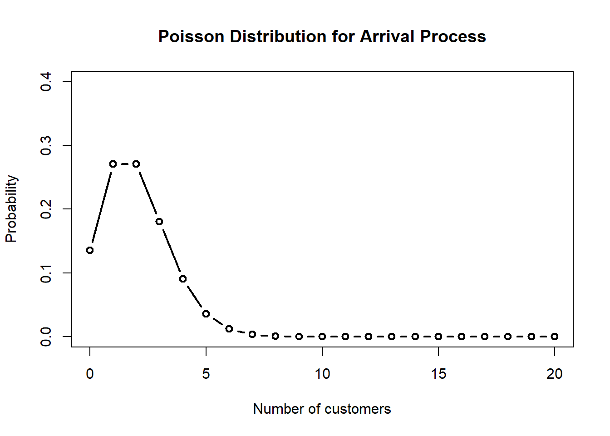
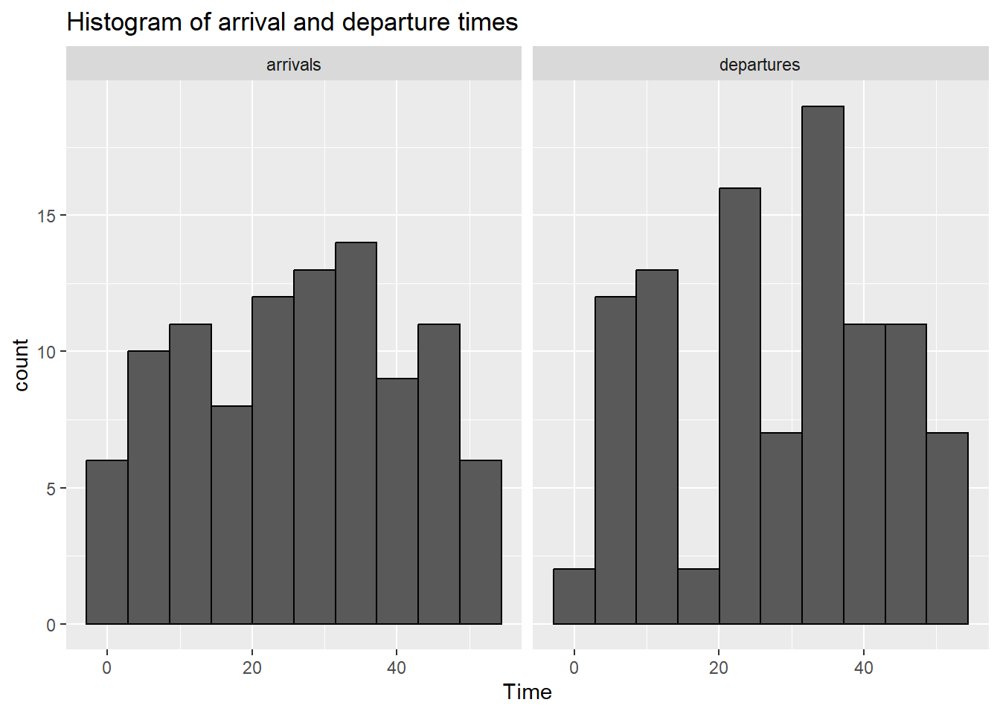
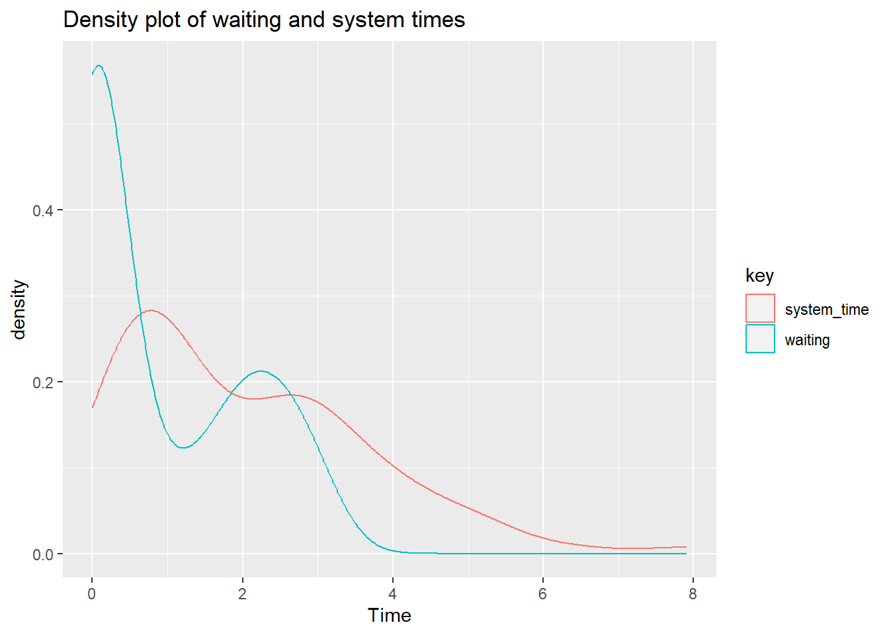
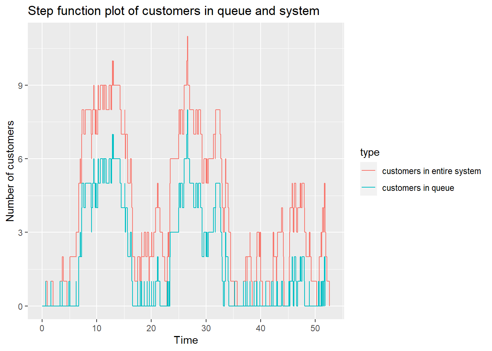
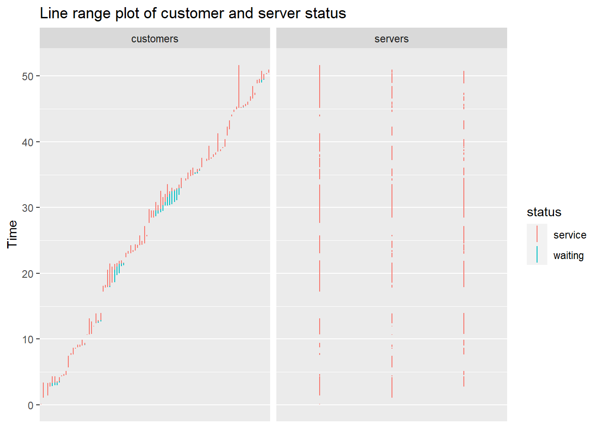
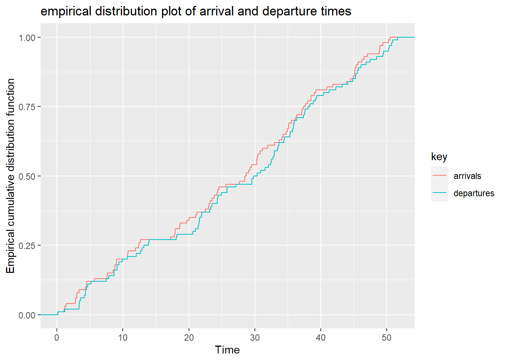
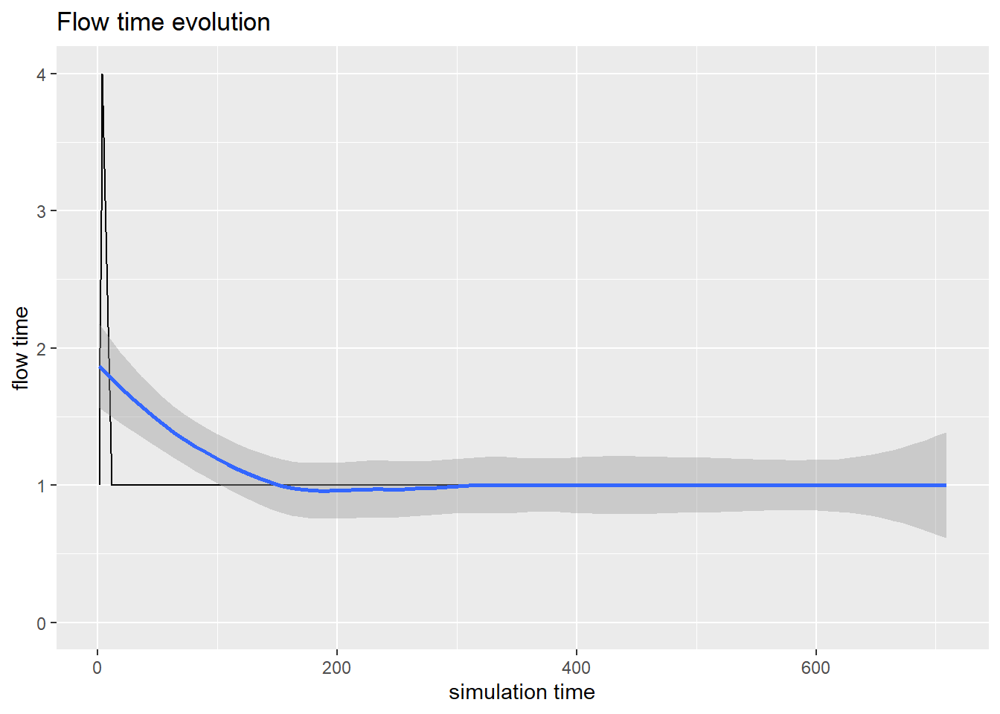
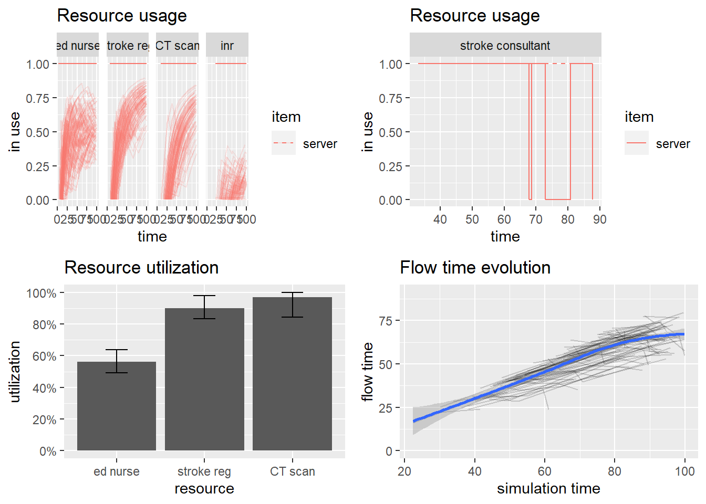
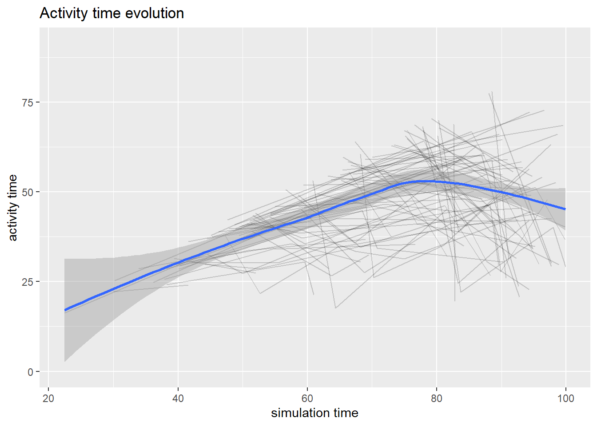

Chapter 9 Operational Research
9.1 Queueing theory
Queueing theory describes the movement of a queue such as customer arrival in bank, shop or emergency department. It seeks to balance supply and demand for a service. It begun with the study queue waiting on Danish telephones in 1909.
Little’s theorem describes the linear relationship between the number of customer L to the customer arrival rate \(\lambda\) and the customer served per time peiod, \(\mu\).
Queueing system is described in terms of Kendall’s notation, M/M/c/k, with exponential arrival time. Using this terminology, MM1 system has 1 server and infinite queue. An MM/2/3 system has 2 (c) servers and 1 (k-c) position in the queue. The M refers to Markov chain.
An example of a single server providing full service is a car wash. Example of a single multiphase server include different single stations in bank of withdrawing, deposit, information A counter at the airport or train station for economy and business passengers is considered multiserver single phase queue. A laundromat with different queues for washing and drying is an example of multiphase multiservers.
A traditional queue at a shop can also be seen as first in first out with the first customer served first and leave first. An issue with FIFO is that people may queue early such as overnight queue for the latest iPhone. Alternatives include last in first out queue and priority queueing in emergency department.
Let’s create a simple queue with 2 customers arriving per minute and 3 customers served per minute. The PO is the probability that the server is idle.
library(queueing)
lambda <- 2 # 2 customers arriving per minute
mu <- 3 # 3 customers served per minute
# MM1
mm1 <- NewInput.MM1(lambda = 2, mu = 3, n = 0)
# Create queue class object
mm1_out <- QueueingModel(mm1)
# Report
Report(mm1_out)## The inputs of the M/M/1 model are:
## lambda: 2, mu: 3, n: 0
##
## The outputs of the M/M/1 model are:
##
## The probability (p0, p1, ..., pn) of the n = 0 clients in the system are:
## 0.3333333
## The traffic intensity is: 0.666666666666667
## The server use is: 0.666666666666667
## The mean number of clients in the system is: 2
## The mean number of clients in the queue is: 1.33333333333333
## The mean number of clients in the server is: 0.666666666666667
## The mean time spend in the system is: 1
## The mean time spend in the queue is: 0.666666666666667
## The mean time spend in the server is: 0.333333333333333
## The mean time spend in the queue when there is queue is: 1
## The throughput is: 2## lambda mu c k m RO P0 Lq Wq X L W Wqq Lqq
## 1 2 3 1 NA NA 0.6666667 0.3333333 1.333333 0.6666667 2 2 1 1 3curve(dpois(x, mm1$lambda),
from = 0,
to = 20,
type = "b",
lwd = 2,
xlab = "Number of customers",
ylab = "Probability",
main = "Poisson Distribution for Arrival Process",
ylim = c(0, 0.4),
n = 21)
Lets examine M/M/3 queue with exponential inter-arrival times, exponential service times and 3 servers.
library(queuecomputer)
n <- 100
arrivals <- cumsum(rexp(n, 1.9))
service <- rexp(n)
mm3 <- queue_step(arrivals = arrivals, service = service, servers = 3)Plot the arrival and departure times
## [[1]] Plot waiting time
## [[1]]
Plot customer in queue
## [[1]]
Plot customer and server status
## [[1]]
Plot arrival and departure time
## [[1]] ## Discrete Event Simulations
Discrete event simulation can be consider as modeling a complexity of system with multiple processes over time. This is different from continuous modeling of a system which evolve continuously with time. Discrete event simulation can be apply to the study of queue such as bank teller with a first in first out system.
9.1.1 Simulate capacity of system
The example below is a based on examples provided in the simmer website for laundromat.
## Loading required package: ggplot2##
## Attaching package: 'simmer.plot'## The following objects are masked from 'package:simmer':
##
## get_mon_arrivals, get_mon_attributes, get_mon_resourcesNUM_ANGIO <- 1 # Number of machines for performing ECR
ECRTIME <- 1 # hours it takes to perform ECR~ 90/60
T_INTER <- 13 # new patient every ~365*24/700 hours
SIM_TIME <- 24*30 # Simulation time over 30 days
# setup
set.seed(42)
env <- simmer()
patient <- trajectory() %>%
log_("arrives at the ECR") %>%
seize("removeclot", 1) %>%
log_("enters the ECR") %>%
timeout(ECRTIME) %>%
set_attribute("clot_removed", function() sample(50:99, 1)) %>%
log_(function()
paste0(get_attribute(env, "clot_removed"), "% of clot was removed")) %>%
release("removeclot", 1) %>%
log_("leaves the ECR")
env %>%
add_resource("removeclot", NUM_ANGIO) %>%
# feed the trajectory with 4 initial patients
add_generator("patient_initial", patient, at(rep(0, 4))) %>%
# new patient approx. every T_INTER minutes
add_generator("patient", patient, function() sample((T_INTER-2):(T_INTER+2), 1)) %>%
# start the simulation
run(SIM_TIME)## 0: patient_initial0: arrives at the ECR
## 0: patient_initial0: enters the ECR
## 0: patient_initial1: arrives at the ECR
## 0: patient_initial2: arrives at the ECR
## 0: patient_initial3: arrives at the ECR
## 1: patient_initial0: 86% of clot was removed
## 1: patient_initial0: leaves the ECR
## 1: patient_initial1: enters the ECR
## 2: patient_initial1: 50% of clot was removed
## 2: patient_initial1: leaves the ECR
## 2: patient_initial2: enters the ECR
## 3: patient_initial2: 74% of clot was removed
## 3: patient_initial2: leaves the ECR
## 3: patient_initial3: enters the ECR
## 4: patient_initial3: 59% of clot was removed
## 4: patient_initial3: leaves the ECR
## 11: patient0: arrives at the ECR
## 11: patient0: enters the ECR
## 12: patient0: 67% of clot was removed
## 12: patient0: leaves the ECR
## 25: patient1: arrives at the ECR
## 25: patient1: enters the ECR
## 26: patient1: 98% of clot was removed
## 26: patient1: leaves the ECR
## 37: patient2: arrives at the ECR
## 37: patient2: enters the ECR
## 38: patient2: 74% of clot was removed
## 38: patient2: leaves the ECR
## 51: patient3: arrives at the ECR
## 51: patient3: enters the ECR
## 52: patient3: 95% of clot was removed
## 52: patient3: leaves the ECR
## 66: patient4: arrives at the ECR
## 66: patient4: enters the ECR
## 67: patient4: 75% of clot was removed
## 67: patient4: leaves the ECR
## 80: patient5: arrives at the ECR
## 80: patient5: enters the ECR
## 81: patient5: 96% of clot was removed
## 81: patient5: leaves the ECR
## 92: patient6: arrives at the ECR
## 92: patient6: enters the ECR
## 93: patient6: 90% of clot was removed
## 93: patient6: leaves the ECR
## 105: patient7: arrives at the ECR
## 105: patient7: enters the ECR
## 106: patient7: 76% of clot was removed
## 106: patient7: leaves the ECR
## 116: patient8: arrives at the ECR
## 116: patient8: enters the ECR
## 117: patient8: 86% of clot was removed
## 117: patient8: leaves the ECR
## 130: patient9: arrives at the ECR
## 130: patient9: enters the ECR
## 131: patient9: 54% of clot was removed
## 131: patient9: leaves the ECR
## 145: patient10: arrives at the ECR
## 145: patient10: enters the ECR
## 146: patient10: 83% of clot was removed
## 146: patient10: leaves the ECR
## 159: patient11: arrives at the ECR
## 159: patient11: enters the ECR
## 160: patient11: 89% of clot was removed
## 160: patient11: leaves the ECR
## 173: patient12: arrives at the ECR
## 173: patient12: enters the ECR
## 174: patient12: 82% of clot was removed
## 174: patient12: leaves the ECR
## 186: patient13: arrives at the ECR
## 186: patient13: enters the ECR
## 187: patient13: 73% of clot was removed
## 187: patient13: leaves the ECR
## 198: patient14: arrives at the ECR
## 198: patient14: enters the ECR
## 199: patient14: 64% of clot was removed
## 199: patient14: leaves the ECR
## 211: patient15: arrives at the ECR
## 211: patient15: enters the ECR
## 212: patient15: 57% of clot was removed
## 212: patient15: leaves the ECR
## 223: patient16: arrives at the ECR
## 223: patient16: enters the ECR
## 224: patient16: 53% of clot was removed
## 224: patient16: leaves the ECR
## 237: patient17: arrives at the ECR
## 237: patient17: enters the ECR
## 238: patient17: 94% of clot was removed
## 238: patient17: leaves the ECR
## 249: patient18: arrives at the ECR
## 249: patient18: enters the ECR
## 250: patient18: 54% of clot was removed
## 250: patient18: leaves the ECR
## 263: patient19: arrives at the ECR
## 263: patient19: enters the ECR
## 264: patient19: 83% of clot was removed
## 264: patient19: leaves the ECR
## 277: patient20: arrives at the ECR
## 277: patient20: enters the ECR
## 278: patient20: 84% of clot was removed
## 278: patient20: leaves the ECR
## 289: patient21: arrives at the ECR
## 289: patient21: enters the ECR
## 290: patient21: 75% of clot was removed
## 290: patient21: leaves the ECR
## 300: patient22: arrives at the ECR
## 300: patient22: enters the ECR
## 301: patient22: 55% of clot was removed
## 301: patient22: leaves the ECR
## 312: patient23: arrives at the ECR
## 312: patient23: enters the ECR
## 313: patient23: 52% of clot was removed
## 313: patient23: leaves the ECR
## 324: patient24: arrives at the ECR
## 324: patient24: enters the ECR
## 325: patient24: 51% of clot was removed
## 325: patient24: leaves the ECR
## 339: patient25: arrives at the ECR
## 339: patient25: enters the ECR
## 340: patient25: 59% of clot was removed
## 340: patient25: leaves the ECR
## 351: patient26: arrives at the ECR
## 351: patient26: enters the ECR
## 352: patient26: 82% of clot was removed
## 352: patient26: leaves the ECR
## 366: patient27: arrives at the ECR
## 366: patient27: enters the ECR
## 367: patient27: 88% of clot was removed
## 367: patient27: leaves the ECR
## 377: patient28: arrives at the ECR
## 377: patient28: enters the ECR
## 378: patient28: 94% of clot was removed
## 378: patient28: leaves the ECR
## 391: patient29: arrives at the ECR
## 391: patient29: enters the ECR
## 392: patient29: 58% of clot was removed
## 392: patient29: leaves the ECR
## 403: patient30: arrives at the ECR
## 403: patient30: enters the ECR
## 404: patient30: 61% of clot was removed
## 404: patient30: leaves the ECR
## 418: patient31: arrives at the ECR
## 418: patient31: enters the ECR
## 419: patient31: 58% of clot was removed
## 419: patient31: leaves the ECR
## 432: patient32: arrives at the ECR
## 432: patient32: enters the ECR
## 433: patient32: 84% of clot was removed
## 433: patient32: leaves the ECR
## 445: patient33: arrives at the ECR
## 445: patient33: enters the ECR
## 446: patient33: 65% of clot was removed
## 446: patient33: leaves the ECR
## 460: patient34: arrives at the ECR
## 460: patient34: enters the ECR
## 461: patient34: 77% of clot was removed
## 461: patient34: leaves the ECR
## 475: patient35: arrives at the ECR
## 475: patient35: enters the ECR
## 476: patient35: 77% of clot was removed
## 476: patient35: leaves the ECR
## 490: patient36: arrives at the ECR
## 490: patient36: enters the ECR
## 491: patient36: 67% of clot was removed
## 491: patient36: leaves the ECR
## 502: patient37: arrives at the ECR
## 502: patient37: enters the ECR
## 503: patient37: 67% of clot was removed
## 503: patient37: leaves the ECR
## 513: patient38: arrives at the ECR
## 513: patient38: enters the ECR
## 514: patient38: 95% of clot was removed
## 514: patient38: leaves the ECR
## 528: patient39: arrives at the ECR
## 528: patient39: enters the ECR
## 529: patient39: 85% of clot was removed
## 529: patient39: leaves the ECR
## 543: patient40: arrives at the ECR
## 543: patient40: enters the ECR
## 544: patient40: 85% of clot was removed
## 544: patient40: leaves the ECR
## 554: patient41: arrives at the ECR
## 554: patient41: enters the ECR
## 555: patient41: 67% of clot was removed
## 555: patient41: leaves the ECR
## 566: patient42: arrives at the ECR
## 566: patient42: enters the ECR
## 567: patient42: 62% of clot was removed
## 567: patient42: leaves the ECR
## 579: patient43: arrives at the ECR
## 579: patient43: enters the ECR
## 580: patient43: 68% of clot was removed
## 580: patient43: leaves the ECR
## 594: patient44: arrives at the ECR
## 594: patient44: enters the ECR
## 595: patient44: 78% of clot was removed
## 595: patient44: leaves the ECR
## 608: patient45: arrives at the ECR
## 608: patient45: enters the ECR
## 609: patient45: 93% of clot was removed
## 609: patient45: leaves the ECR
## 619: patient46: arrives at the ECR
## 619: patient46: enters the ECR
## 620: patient46: 70% of clot was removed
## 620: patient46: leaves the ECR
## 630: patient47: arrives at the ECR
## 630: patient47: enters the ECR
## 631: patient47: 97% of clot was removed
## 631: patient47: leaves the ECR
## 643: patient48: arrives at the ECR
## 643: patient48: enters the ECR
## 644: patient48: 87% of clot was removed
## 644: patient48: leaves the ECR
## 658: patient49: arrives at the ECR
## 658: patient49: enters the ECR
## 659: patient49: 62% of clot was removed
## 659: patient49: leaves the ECR
## 669: patient50: arrives at the ECR
## 669: patient50: enters the ECR
## 670: patient50: 58% of clot was removed
## 670: patient50: leaves the ECR
## 684: patient51: arrives at the ECR
## 684: patient51: enters the ECR
## 685: patient51: 92% of clot was removed
## 685: patient51: leaves the ECR
## 696: patient52: arrives at the ECR
## 696: patient52: enters the ECR
## 697: patient52: 91% of clot was removed
## 697: patient52: leaves the ECR
## 708: patient53: arrives at the ECR
## 708: patient53: enters the ECR
## 709: patient53: 78% of clot was removed
## 709: patient53: leaves the ECR
## 719: patient54: arrives at the ECR
## 719: patient54: enters the ECR## simmer environment: anonymous | now: 720 | next: 720
## { Monitor: in memory }
## { Resource: removeclot | monitored: TRUE | server status: 1(1) | queue status: 0(Inf) }
## { Source: patient_initial | monitored: 1 | n_generated: 4 }
## { Source: patient | monitored: 1 | n_generated: 56 }Plot the schematics of the simulation.
Plot resource usage
Total queue size
## [1] 9Number of people in queue of size 1
## [1] 2Number of peope in queue of size 2
## [1] 2Plot arrival versus flow
## `geom_smooth()` using method = 'loess' and formula 'y ~ x'
Next we simulate the process of running a stroke code. In this simulation the activities occur sequentially.
#simulate ST6
patient <- trajectory("patients' path") %>%
## add an intake activity - nurse arrive first on scene in ED to triage
#seize specify priority
seize("ed nurse", 1) %>%
#timeout return one random value from 5 mean+/-5 SD
timeout(function() rnorm(1,5,5)) %>%
release("ed nurse", 1) %>%
## add a registrar activity - stroke registrar arrive after stroke code
seize("stroke reg", 1) %>%
timeout(function() rnorm(1, 10,5)) %>%
release("stroke reg", 1) %>%
#add CT scanning - the process takes 15 minutes
seize("CT scan", 1) %>%
timeout(function() rnorm(1, 15,15)) %>%
release("CT scan", 1) %>%
#stroke reg re-enter
#seize("stroke reg", 1) %>%
#timeout(function() rnorm(1, 10,5)) %>%
#release("stroke reg", 1) %>%
#branch
## add stroke consultant - to review scan and makes decision
seize("stroke consultant", 1) %>%
timeout(function() rnorm(1, 5,10)) %>%
release("stroke consultant", 1) %>%
## add a thrombectomy decision activity
seize("inr", 1) %>%
timeout(function() rnorm(1, 5,5)) %>%
release("inr", 1)
envs <- mclapply(1:100, function(i) {
simmer("SuperDuperSim") %>%
add_resource("ed nurse", 1) %>%
add_resource("stroke reg", 1) %>%
add_resource("CT scan", 1) %>%
add_resource("stroke consultant", 1) %>%
add_resource("inr", 1) %>%
add_generator("patient", patient, function() rnorm(1, 10, 2)) %>%
run(100) %>%
wrap()
})Plot patient flow
#plot.simmer
resources <- get_mon_resources(envs)
#
p1<-plot(resources, metric = "usage",
c("ed nurse","stroke reg","CT scan", "stroke consultant","inr"),
items = "serve")
#resource usage
p2<-plot(get_mon_resources(envs[[6]]), metric = "usage", "stroke consultant", items = "server", steps = TRUE)
#resource utilisation
p3<-plot(resources, metric="utilization", c("ed nurse", "stroke reg","CT scan"))
#Flow time evolution
arrivals <- get_mon_arrivals(envs)
p4<-plot(arrivals, metric = "flow_time")
#combine plot
gridExtra::grid.arrange(p1,p2, p3,p4)## `geom_smooth()` using method = 'loess' and formula 'y ~ x'
## `geom_smooth()` using method = 'loess' and formula 'y ~ x'
Now we will fork another path in the patient flow
9.1.2 Queuing network
mean_pkt_size <- 100 # bytes
lambda1 <- 2 # pkts/s
lambda3 <- 0.5 # pkts/s
lambda4 <- 0.6 # pkts/s
rate <- 2.2 * mean_pkt_size # bytes/s
# set an exponential message size of mean mean_pkt_size
set_msg_size <- function(.)
set_attribute(., "size", function() rexp(1, 1/mean_pkt_size))
# seize an M/D/1 queue by id; the timeout is function of the message size
md1 <- function(., id)
seize(., paste0("md1_", id), 1) %>%
timeout(function() get_attribute(env, "size") / rate) %>%
release(paste0("md1_", id), 1)to_queue_1 <- trajectory() %>%
set_msg_size() %>%
md1(1) %>%
leave(0.25) %>%
md1(2) %>%
branch(
function() (runif(1) > 0.65) + 1, continue=c(F, F),
trajectory() %>% md1(3),
trajectory() %>% md1(4)
)
to_queue_3 <- trajectory() %>%
set_msg_size() %>%
md1(3)
to_queue_4 <- trajectory() %>%
set_msg_size() %>%
md1(4)env <- simmer()
for (i in 1:4) env %>%
add_resource(paste0("md1_", i))
env %>%
add_generator("arrival1_", to_queue_1, function() rexp(1, lambda1), mon=2) %>%
add_generator("arrival3_", to_queue_3, function() rexp(1, lambda3), mon=2) %>%
add_generator("arrival4_", to_queue_4, function() rexp(1, lambda4), mon=2) %>%
run(4000)## simmer environment: anonymous | now: 4000 | next: 4000.01785654125
## { Monitor: in memory }
## { Resource: md1_1 | monitored: TRUE | server status: 1(1) | queue status: 15(Inf) }
## { Resource: md1_2 | monitored: TRUE | server status: 1(1) | queue status: 1(Inf) }
## { Resource: md1_3 | monitored: TRUE | server status: 1(1) | queue status: 0(Inf) }
## { Resource: md1_4 | monitored: TRUE | server status: 0(1) | queue status: 0(Inf) }
## { Source: arrival1_ | monitored: 2 | n_generated: 8023 }
## { Source: arrival3_ | monitored: 2 | n_generated: 2031 }
## { Source: arrival4_ | monitored: 2 | n_generated: 2399 }res <- get_mon_arrivals(env, per_resource = TRUE) %>%
subset(resource %in% c("md1_3", "md1_4"), select=c("name", "resource"))
arr <- get_mon_arrivals(env) %>%
transform(waiting_time = end_time - (start_time + activity_time)) %>%
transform(generator = regmatches(name, regexpr("arrival[[:digit:]]", name))) %>%
merge(res)
aggregate(waiting_time ~ generator + resource, arr, function(x) sum(x)/length(x))## generator resource waiting_time
## 1 arrival1 md1_3 6.8729025
## 2 arrival3 md1_3 0.8427541
## 3 arrival1 md1_4 6.7479945
## 4 arrival4 md1_4 0.4598295## [1] 10422## generator resource waiting_time
## 1 arrival1 md1_3 3824
## 2 arrival3 md1_3 2030
## 3 arrival1 md1_4 2188
## 4 arrival4 md1_4 23989.2 Linear Programming
Linear programming is an optimisation process to maximise profit and minimise cost with multiple parts of the model having linear relationship. There are several different libraries useful for linear programming. The lpSolve library is used here as illustration.
library(lpSolve)
#solve using linear programming
n <-2.5 # Numbers of techs. 1 EFT means a person is employed for 40 hours a week and 0.5 EFT means a person is employed for 20 hours a week.
set_up_eeg <- 40 # 40 minutes
to_do_eeg <- 30 # 30 minutes
clean_equipment <- 20 # 20 minutes
annotate_eeg <- 10 # 10 minutes
# put some error for EEG time
# if error=1 that mean NO errors happen
error <- 0.8 #change from 0.93
#Calculate time for EEG in hour
eeg_case_time <- ((set_up_eeg+to_do_eeg+clean_equipment+annotate_eeg)/60)*error
# limit for EEG per day
# we can put different limits for EEGs
limit_eeg <- round(8*eeg_case_time, digits = 0)
#s[i] - numbers of cases for each i-EEG's machines
#Setting the coefficients of s[i]-decision variables
#In a future can put some efficiency or some cost
objective.in=c(1,1,1,1,1)
#Constraint Matrix
const.mat=matrix(c(1,0,0,0,0,
0,1,0,0,0,
0,0,1,0,0,
0,0,0,1,0,
0,0,0,0,1,
1,1,1,1,1),nrow = 6,byrow = T)
#defining constraints
const_num_1=limit_eeg #in cases
const_num_2=limit_eeg #in cases
const_num_3=limit_eeg #in cases
const_num_4=limit_eeg #in cases
const_num_5=limit_eeg #in cases
const_res= n*7 # limit per sessions
#RHS for constraints
const.rhs=c(const_num_1,const_num_2,const_num_3,const_num_4,const_num_5, const_res)
#Direction for constraints
constr.dir <- rep("<=",6)
#Finding the optimum solution
opt=lp(direction = "max",objective.in,const.mat,constr.dir,const.rhs)
#summary(opt)
#Objective values of s[i]
opt$solution ## [1] 11.0 6.5 0.0 0.0 0.0Estimate for day (Value of objective function at optimal point)
## [1] 17.5Estimate EEG per month based on staff EFT- only 2.5
## [1] 366Assuming that the time spend on a report by neurologists (1 report = 30 min) then in a 3.5 hour session a neurologist can report 7 EEG.
## [1] 13.071439.3 Forecasting
Forecasting is useful in predicting trends. In health care it can be used for estimating seasonal trends and bed requirement. Below is a forecast of mortality from COVID-19 in 2020. This forecast is an example and is not meant to be used in practice as mortality from COVID depends on the number of factors including infected cases, age, socioeconomic group, and comorbidity.
## -- Attaching packages --------------------------------------- tidyverse 1.3.0 --## v tibble 3.1.6 v dplyr 1.0.8
## v tidyr 1.1.4 v stringr 1.4.0
## v readr 1.4.0 v forcats 0.5.0
## v purrr 0.3.4## Warning: package 'tibble' was built under R version 4.0.5## Warning: package 'tidyr' was built under R version 4.0.5## Warning: package 'dplyr' was built under R version 4.0.5## -- Conflicts ------------------------------------------ tidyverse_conflicts() --
## x dplyr::filter() masks stats::filter()
## x dplyr::lag() masks stats::lag()
## x dplyr::select() masks simmer::select()
## x tidyr::separate() masks simmer::separate()## Loading required package: Rcpp## Warning: package 'Rcpp' was built under R version 4.0.5## Loading required package: rlang## Warning: package 'rlang' was built under R version 4.0.5##
## Attaching package: 'rlang'## The following objects are masked from 'package:purrr':
##
## %@%, as_function, flatten, flatten_chr, flatten_dbl, flatten_int,
## flatten_lgl, flatten_raw, invoke, splice## NOTE: Either Arial Narrow or Roboto Condensed fonts are required to use these themes.## Please use hrbrthemes::import_roboto_condensed() to install Roboto Condensed and## if Arial Narrow is not on your system, please see https://bit.ly/arialnarrow##
## Attaching package: 'lubridate'## The following objects are masked from 'package:simmer':
##
## now, rollback## The following objects are masked from 'package:base':
##
## date, intersect, setdiff, unionlibrary(readr) #use read_csv to read csv rather than base R
covid<-read_csv("./Data-Use/Covid_Table100420.csv") ## Warning: Missing column names filled in: 'X1' [1]## Warning: Duplicated column names deduplicated: 'COVID-19 Deaths' => 'COVID-19
## Deaths_1' [6], 'Pneumonia Deaths*' => 'Pneumonia Deaths*_1' [8], 'Influenza
## Deaths' => 'Influenza Deaths_1' [10]##
## -- Column specification --------------------------------------------------------
## cols(
## X1 = col_double(),
## Year = col_double(),
## Week = col_double(),
## `Total Deaths` = col_number(),
## `COVID-19 Deaths` = col_number(),
## `COVID-19 Deaths_1` = col_double(),
## `Pneumonia Deaths*` = col_number(),
## `Pneumonia Deaths*_1` = col_double(),
## `Influenza Deaths` = col_double(),
## `Influenza Deaths_1` = col_double(),
## Total.Deaths = col_double(),
## Date = col_date(format = "")
## )## [1] "X1" "Year" "Week"
## [4] "Total Deaths" "COVID-19 Deaths" "COVID-19 Deaths_1"
## [7] "Pneumonia Deaths*" "Pneumonia Deaths*_1" "Influenza Deaths"
## [10] "Influenza Deaths_1" "Total.Deaths" "Date"# A data frame with columns ds & y (datetimes & metrics)
covid<-rename(covid, ds =Date, y=Total.Deaths)
covid2 <- covid[c(1:12),]
m<-prophet(covid2)#create prophet object## Disabling yearly seasonality. Run prophet with yearly.seasonality=TRUE to override this.## Disabling weekly seasonality. Run prophet with weekly.seasonality=TRUE to override this.## Disabling daily seasonality. Run prophet with daily.seasonality=TRUE to override this.## n.changepoints greater than number of observations. Using 8# Extend dataframe 12 weeks into the future
future <- make_future_dataframe(m, freq="week" , periods = 26)
# Generate forecast for next 500 days
forecast <- predict(m, future)
# What's the forecast for July 2020?
forecasted_rides <- forecast %>%
arrange(desc(ds)) %>%
dplyr::slice(1) %>%
pull(yhat) %>%
round()
forecasted_rides## [1] 67488# Visualize
forecast_p <- plot(m, forecast) +
labs(x = "",
y = "mortality",
title = "Projected COVID-19 world mortality",
subtitle = "based on data truncated in January 2020") +
ylim(20000,80000)+
theme_ipsum_rc()
#forecast_p9.3.1 Bed requirement
9.3.2 Length of stay
9.3.3 Customer churns
Customer churns or turnover is an issue of interest in marketing. The corollary within healthcare is patients attendance at outpatient clinics, Insurance. The classical method used is GLM.
9.4 Process mapping
library(DiagrammeR)
a.plot<-mermaid("
graph TB
A((Triage))
A-->|2.3 hr|B(Imaging-No Stroke Code)
A-->|0.6 hr|B1(Imaging-Stroke Code)
B-->|14.6 hr|B2(Dysphagia Screen)
B1-->|no TPA 10.7 hr|B2(Dysphagia Screen)
C(Stop NBM)
B2-->|0 hr|C
C-->|Oral route 1.7 hr|E{Antithrombotics}
D1-->|7.5 hr|E
B-->|PR route 6.8 hr|E
B1-->|PR route 3.8 hr|E
B1-->|TPA 24.7 hr|D1(Post TPA Scan)
style A fill:#ADF, stroke:#333, stroke-width:2px
style B fill:#9AA, stroke:#333, stroke-width:2px
style B2 fill:#9AA, stroke:#333, stroke-width:2px
style B1 fill:#879, stroke:#333, stroke-width:2px
style C fill:#9AA, stroke:#333, stroke-width:2px
style D1 fill:#879, stroke:#333, stroke-width:2px
style E fill:#9C2, stroke:#9C2, stroke-width:2px
")
a.plot##
## Attaching package: 'bupaR'## The following object is masked from 'package:simmer':
##
## select## The following object is masked from 'package:stats':
##
## filter## The following object is masked from 'package:utils':
##
## timestamp9.5 Supply chains
9.6 Health economics
9.6.1 Cost
##
## Attaching package: 'hesim'## The following object is masked from 'package:tidyr':
##
## expand##
## Attaching package: 'data.table'## The following objects are masked from 'package:lubridate':
##
## hour, isoweek, mday, minute, month, quarter, second, wday, week,
## yday, year## The following object is masked from 'package:rlang':
##
## :=## The following objects are masked from 'package:dplyr':
##
## between, first, last## The following object is masked from 'package:purrr':
##
## transposestrategies <- data.table(strategy_id = c(1, 2))
n_patients <- 1000
patients <- data.table(patient_id = 1:n_patients,
age = rnorm(n_patients, mean = 70, sd = 10),
female = rbinom(n_patients, size = 1, prob = .4))
states <- data.table(state_id = c(1, 2),
state_name = c("Healthy", "Sick"))
# Non-death health states
tmat <- rbind(c(NA, 1, 2),
c(3, NA, 4),
c(NA, NA, NA))
colnames(tmat) <- rownames(tmat) <- c("Healthy", "Sick", "Dead")
transitions <- create_trans_dt(tmat)
transitions[, trans := factor(transition_id)]
hesim_dat <- hesim_data(strategies = strategies,
patients = patients,
states = states,
transitions = transitions)
print(hesim_dat)## $strategies
## strategy_id
## 1: 1
## 2: 2
##
## $patients
## patient_id age female
## 1: 1 61.99932 1
## 2: 2 65.95321 0
## 3: 3 56.97051 0
## 4: 4 89.82190 1
## 5: 5 48.45879 0
## ---
## 996: 996 73.50196 1
## 997: 997 81.33720 0
## 998: 998 52.63094 1
## 999: 999 80.48849 0
## 1000: 1000 35.97193 0
##
## $states
## state_id state_name
## 1: 1 Healthy
## 2: 2 Sick
##
## $transitions
## transition_id from to from_name to_name trans
## 1: 1 1 2 Healthy Sick 1
## 2: 2 1 3 Healthy Dead 2
## 3: 3 2 1 Sick Healthy 3
## 4: 4 2 3 Sick Dead 4
##
## attr(,"class")
## [1] "hesim_data"Data from WHO on mortality rate can be extracted directly from WHO or by calling get_who_mr in heemod library.
## Registered S3 method overwritten by 'pryr':
## method from
## print.bytes Rcpp##
## Attaching package: 'heemod'## The following object is masked from 'package:purrr':
##
## modify## The following object is masked from 'package:simmer':
##
## joinThere are several data in BCEA library.
library(BCEA)
#use Vaccine data from BCEA
data(Vaccine,package = "BCEA")
ints=c("Standard care","Vaccination")
m <- bcea(e,c,ref=2,interventions=ints)
summary(m)##
## Cost-effectiveness analysis summary
##
## Reference intervention: Vaccination
## Comparator intervention: Standard care
##
## Optimal decision: choose Standard care for k<20100 and Vaccination for k>=20100
##
##
## Analysis for willingness to pay parameter k = 25000
##
## Expected utility
## Standard care -36.054
## Vaccination -34.826
##
## EIB CEAC ICER
## Vaccination vs Standard care 1.2284 0.529 20098
##
## Optimal intervention (max expected utility) for k=25000: Vaccination
##
## EVPI 2.4145